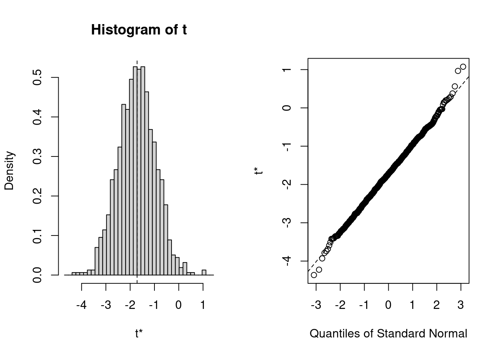

# use "sturgeon" dataframe to make plot called mygraph
# and define x axis as representing fklngth
mygraph <- ggplot(
data = sturgeon,
aes(x = fklngth)
) +
xlab("Fork length (cm)")
# add data to the mygraph ggplot
mygraph <- mygraph +
geom_density() + # add data density smooth
geom_rug() + # add rug (bars at the bottom of the plot)
geom_histogram( # add black semitransparent histogram
aes(y = ..density..),
color = "black", alpha = 0.3
) +
# add normal curve in red, with mean and sd from fklength
stat_function(
fun = dnorm,
args = list(
mean = mean(sturgeon$fklngth),
sd = sd(sturgeon$fklngth)
),
color = "red"
)
# display graph, by location
mygraph + facet_grid(. ~ location)4 Two - sample comparisons
After completing this laboratory exercise, you should be able to:
- Use R to visually examine data.
- Use R to compare the means of two normally distributed samples.
- Use R to compare the means of two non-normally distributed samples.
- Use R to compare the means of two paired samples
4.1 R packages and data
For this la b you need:
- R packages:
- car
- lmtest
- boot
- pwr
- ggplot2
- performance
- data:
- sturgeon.csv
- skulldat_2020.csv
You need to load the packages in R with library() and if need needed install them first with install.packages() For the data, load them using the read.csv() function.
4.2 Visual examination of sample data
One of the first steps in any type of data analysis is to visualize your data with plots and summary statistics, to get an idea of underlying distributions, possible outliers, and trends in your data. This often begins with plots of the data, such as histograms, probability plots, and box plots, that allow you to get a feel for whether your data are normally distributed, whether they are correlated one to the other, or whether there are any suspicious looking points that may lead you to go back to the original data file to check for errors.
Suppose we want to test the null hypothesis that the size, as indexed by fork length ( fklngth in file sturgeon.csv - the length, in cm, from the tip of the nose to the base of the fork in the caudal fin), of sturgeon at The Pas and Cumberland House is the same. To begin, we have a look at the underlying distributions of the sample data to get a feel for whether the data are normally distributed in each sample. We will not actually test for normality at this point; the assumption of normality in parametric analyses refers always to the residuals and not the raw data themselves. However, if the raw data are non-normally distributed, then you usually have good reason to suspect that the residuals also will be non-normally distributed.
An excellent way to visually compare a data distribution to a normal distribution is to superimpose a histogram of the data and a normal curve. To do so, we must proceed in two steps:
- tell R that we want to make a histogram with a density curve superimposed
- tell R that we want this to be done for both locations.
- Using the data file
sturgeon.csv, generate histograms forfklngthdata at The Pas and Cumberland House.
Based on your visual inspection, are the two samples normally distributed? Visual inspection of these plots suggests that this variable is approximately normally distributed in each sample.
Since we are interested in finding out if mean fish size differs among the two locations, it is probably also a good idea to generate a graph that compares the two groups of data. A box plot works well for this.
- Generate a box plot of
fklngthgrouped bylocation. What do you conclude about differences in size among the two locations?
ggplot(data = sturgeon, aes(
x = location,
y = fklngth
)) +
geom_boxplot(notch = TRUE)It would appear as though there are not big differences in fish size among the two locations, although fish size at The Pas looks to be more variable, with a bigger range in size and outliers (defined as values > 1.5 * inter-quartile range) at both ends of the distribution.
4.3 Comparing means of two independent samples: parametric and non-parametric comparisons
Test the null hypothesis that the mean fklngth of The Pas and Cumberland House samples are the same. Using 3 different tests:
- parametric test with equal variances
- parametric test with unequal variances
- non-parametric test
What do you conclude?
# t-test assuming equal variances
t.test(
fklngth ~ location,
data = sturgeon,
alternative = "two.sided",
var.equal = TRUE
)
Two Sample t-test
data: fklngth by location
t = 2.1359, df = 184, p-value = 0.03401
alternative hypothesis: true difference in means between group CUMBERLAND and group THE_PAS is not equal to 0
95 percent confidence interval:
0.1308307 3.2982615
sample estimates:
mean in group CUMBERLAND mean in group THE_PAS
45.08439 43.36984 # t-test assuming unequal variances
t.test(
fklngth ~ location,
data = sturgeon,
alternative = "two.sided",
var.equal = FALSE
)
Welch Two Sample t-test
data: fklngth by location
t = 2.2201, df = 169.8, p-value = 0.02774
alternative hypothesis: true difference in means between group CUMBERLAND and group THE_PAS is not equal to 0
95 percent confidence interval:
0.1900117 3.2390804
sample estimates:
mean in group CUMBERLAND mean in group THE_PAS
45.08439 43.36984 # test non paramétrique
wilcox.test(
fklngth ~ location,
data = sturgeon,
alternative = "two.sided"
)
Wilcoxon rank sum test with continuity correction
data: fklngth by location
W = 4973, p-value = 0.06296
alternative hypothesis: true location shift is not equal to 0Based on the t-test, we would reject the null hypothesis, i.e. there is a significant (but not highly significant) difference in mean fork length between the two populations.
Note that using the Wilcoxon rank sum test, we do not reject the null hypothesis. The two different tests therefore give us two different results. The significant difference obtained using the t-test may, at least in part, be due to deviations from normality or homoscedasticity; on the other hand, the non-significant difference obtained using the U -statistic may be due to the fact that for fixed sample size, the power of a non-parametric test is lower than the corresponding parametric test. Given the p values obtained from both tests, and the fact that for samples of this size (84 and 101), the t-test is comparatively robust with respect to non-normality, I would be inclined to reject the null hypothesis. In practice to avoid P-hacking, you should decide which test is appropriate first and then apply and interpret it, or if you decide to do all you should present results of all and interpret accordingly.
Before accepting the results of the parametric t-test and rejecting the null hypothesis that there is no difference in size between the two locations, one should do some sort of assessment to determine if the model fits the assumption of normally distributed residuals and equal variances. Preliminary examination of the raw data suggested the data appeared roughly normal but there might be problems with variances (since the spread of data for The_Pas was much greater than for Cumberland). We can examine this more closely by looking at the residuals. An easy way to do so, is to fit a linear model and use the residual diagnostic plots:

The first plot above shows the spread of the residuals around the estimated values for the two groups and allows us to get a feel for whether there are problems with the assumption of homogeneity of variances. If the variances were equal, the vertical spread of the two clusters of points should be about the same. The above plot shows that the vertical spread of the group with the smaller mean is greater than it is for the larger mean, suggesting again that there are problems with the variances. We can test this formally by examining the mean differences in the absolute value of the residuals.
The second graph above is a normal QQ plot (or probability plot) of the residuals of the model. Note that these generally fall on a straight line, suggesting there is no real problem with normality. We can do a formal test for normality on the residuals using the Shapiro-Wilk test.
shapiro.test(residuals(m1))
Shapiro-Wilk normality test
data: residuals(m1)
W = 0.97469, p-value = 0.001857Hummm. The test indicates that the residuals are not normal. But, given that (a) the distribution is not very far (at least visually) from normal, and that (b) the number of observations in each location is reasonably large (i.e. >30), we do not need to be overly concerned with this violation of the normality assumption.
How about equality of variance?
library(car)
leveneTest(m1)Warning in leveneTest.default(y = y, group = group, ...): group coerced to
factor.Levene's Test for Homogeneity of Variance (center = median)
Df F value Pr(>F)
group 1 11.514 0.0008456 ***
184
---
Signif. codes: 0 '***' 0.001 '**' 0.01 '*' 0.05 '.' 0.1 ' ' 1bptest(m1)
studentized Breusch-Pagan test
data: m1
BP = 8.8015, df = 1, p-value = 0.00301The above are the results of two tests implemented in R (in the car and lmtest packages 📦 that can be used to test for equal variances in t-tests or linear models involving only discontinuous or categorical independent variables. Doing the two of them is overkill. There is not much to prefer one test over another. Levene test is possibly the better known. It tests whether the mean of absolute values of the residuals differs among groups. The Breusch-Pagan test has the advantage of being applicable to more linear models (it can deal with regression-type continuous independent variables, at least to some extent). It tests whether the studentized (i.e. scaled by their sd estimate) squared residuals vary with the independent variables in a linear model. In this case, both indicate that variances are unequal.
On the basis of these results, we conclude that there is evidence (albeit weak) to reject the null hypothesis of no difference in fklngth by location. We have modified the t-test to accommodate unequal variances, and are satisfied that the assumption of normally distributed residuals is sufficiently met. Thus, it appears that fklngth at Cumberland is greater than fklngth at The Pas.
4.4 Bootstrap and permutation tests to compare 2 means
4.4.1 Bootstrap
Bootstrap and permutation tests can be used to compare means (or other statistics) between pairs of samples. The general idea is simple, and it can be implemented in more ways than I can count. Here, I use existing tools and the fact that a comparison of means can be construed as a test of a linear model. We will be able to use similar code later on when we fit more complex (but fun!) models.
library(boot)The first section defines the function that I called bs that simply extracts coefficients from a fitted model:
The second section with the boot() command is where the real work is done: take data in sturgeon, bootstrap \(R = 1000\) times, each time fit the model fklngth vs location, and keep the values calculated by the bs() function.
# bootstrapping with 1000 replications
results <- boot(
data = sturgeon, statistic = bs, R = 1000,
formula = fklngth ~ location
)
# view results
results
ORDINARY NONPARAMETRIC BOOTSTRAP
Call:
boot(data = sturgeon, statistic = bs, R = 1000, formula = fklngth ~
location)
Bootstrap Statistics :
original bias std. error
t1* 45.084391 0.004105109 0.4414244
t2* -1.714546 -0.011763884 0.7449435So we get the original estimates for the two coefficients in this model: the mean at the first (alphabetical) location, Cumberland, and the difference in means between Cumberland and The Pas ). It is the second parameter, the difference between means, which is of interest here.
plot(results, index = 2)
# get 95% confidence intervals
boot.ci(results, type = "bca", index = 2)BOOTSTRAP CONFIDENCE INTERVAL CALCULATIONS
Based on 1000 bootstrap replicates
CALL :
boot.ci(boot.out = results, type = "bca", index = 2)
Intervals :
Level BCa
95% (-3.088, -0.235 )
Calculations and Intervals on Original ScaleThe 95% CI for the difference between the two means does not include 0. Hence, the bootstrap test indicates that the two means are not equals.
4.4.2 Permutation
Permutation tests for linear models can easily be done using the lmPerm package 📦.
m1Perm <- lmp(
fklngth ~ location,
data = sturgeon,
perm = "Prob"
)[1] "Settings: unique SS "The lmp() function does all the work for us. Here it is run with the option perm to control the stopping rule used. Option Prob stops the sampling when the estimated standard deviation of the p-value falls below some fraction of the estimated. It is one of many stopping rules that one could use to do permutations on a subset of all the possibilities (because it would take foreeeever to do them all, even on your fast machine).
summary(m1Perm)
Call:
lmp(formula = fklngth ~ location, data = sturgeon, perm = "Prob")
Residuals:
Min 1Q Median 3Q Max
-18.40921 -3.75370 -0.08439 3.76598 23.48055
Coefficients:
Estimate Iter Pr(Prob)
location1 0.8573 3624 0.027 *
---
Signif. codes: 0 '***' 0.001 '**' 0.01 '*' 0.05 '.' 0.1 ' ' 1
Residual standard error: 5.454 on 184 degrees of freedom
Multiple R-Squared: 0.02419, Adjusted R-squared: 0.01889
F-statistic: 4.562 on 1 and 184 DF, p-value: 0.03401 -
Itercoefficient: the Prob stopping rule stopped after 0.4013591 iterations. Note that this number will vary each time you run this snippet of code. These are random permutation results, so expect variability. -
Pr(Prob)coefficient: The estimated probability associated to H0 is 2.1359 . The observed difference in fklngth between the two locations was larger than the permuted differences in about (1 - 2.1359= about -113.6%) of the 0.4013591 cases. Mind you, 0.4013591 permutations is not a large number, so small p values can’t be expected to be very precise. If it is critical that you get more precise p values, more permutations would be needed. Two parameters can be tweaked: maxIter, the maximum number of iterations (default=5000), and Ca, that stops iterations when estimated standard error of the estimated p is less than Ca*p. Default 0.1. -
F-statistic: The rest is the standard output for the model fitted to the data, with the standard parametric test. Here the p-value, assuming all assumptions are met, is 0.034.
4.5 Comparing the means of paired samples
In some experimental designs, individuals are measured twice: common examples are the measurement of the same individual at two different times during development, or of the same individual subjected to two different experimental treatments. In these cases, the two samples are not independent (they include the same individuals), and a paired comparison must be made.
The file skulldat_2020.csv shows measurements of lower face width of 15 North American girls measured at age 5 and again at age 6 years (data from Newman and Meredith, 1956).
- Let’s first run a standard t-test comparing the face width at age 5 and 6, not taking into account that the data are not independent and that they are consecutive measurements on the same individuals.
skull <- read.csv("data/skulldat_2020.csv")
t.test(width ~ age,
data = skull,
alternative = "two.sided",
paired = FALSE
)
Welch Two Sample t-test
data: width by age
t = -1.7812, df = 27.93, p-value = 0.08576
alternative hypothesis: true difference in means between group 5 and group 6 is not equal to 0
95 percent confidence interval:
-0.43002624 0.03002624
sample estimates:
mean in group 5 mean in group 6
7.461333 7.661333 So far, we specified the t-test using a formula notation as y ~ x where y is the variable for which we want to compare the means and x is a variable defining the groups. This works really well when the samples are not paired and when the data is presented in a long format. For example theskull data is presented in a long format and contains 3 variables:
-
width: head width for each observations -
age: age at measurement 5 or 6 -
id: person identity
head(skull) width age id
1 7.33 5 1
2 7.53 6 1
3 7.49 5 2
4 7.70 6 2
5 7.27 5 3
6 7.46 6 3When data are paired, we need to indicate how they are paired. In the skulldata, samples are paired by an individual identity, id, with mearurement taken at different ages. However, the function t.test does not cope well with this data structure. We need to transpose the data from a long to a wide format where we have a column per group, with the data of a given individual on the same line. Here is how we can do it.
skull_w <- data.frame(id = unique(skull$id))
skull_w$width5 <- skull$width[match(skull_w$id, skull$id) & skull$age == 5]
skull_w$width6 <- skull$width[match(skull_w$id, skull$id) & skull$age == 6]
head(skull_w) id width5 width6
1 1 7.33 7.53
2 2 7.49 7.70
3 3 7.27 7.46
4 4 7.93 8.21
5 5 7.56 7.81
6 6 7.81 8.01Now, let’s run the appropriate paired t-test. What do you conclude? Compare this with the previous result and explain any differences.
t.test(skull_w$width5, skull_w$width6,
alternative = "two.sided",
paired = TRUE
)
Paired t-test
data: skull_w$width5 and skull_w$width6
t = -19.72, df = 14, p-value = 1.301e-11
alternative hypothesis: true mean difference is not equal to 0
95 percent confidence interval:
-0.2217521 -0.1782479
sample estimates:
mean difference
-0.2 The first analysis above assumes that the two samples of girls at age 5 and 6 are independent samples, whereas the second analysis assumes that the same girl is measured twice, once at age 5 and once at age 6 years.
Note that in the former case, we accept the null based on \(p = 0.05\), but in the latter we reject the null. In other words, the appropriate (paired sample) test shows a very significant effect of age, whereas the inappropriate one does not. The reason is because there is a strong correlation between face width at age 5 and face width at age 6:
graphskull <- ggplot(data = skull_w, aes(x = width5, y = width6)) +
geom_point() +
labs(x = "Skull width at age 5", y = "Skull width at age 6") +
geom_smooth() +
scale_fill_continuous(low = "lavenderblush", high = "red")
graphskull`geom_smooth()` using method = 'loess' and formula = 'y ~ x'With r = 0.9930841. In the presence of correlation, the standard error of the pairwise difference in face width at age 5 and 6 is much smaller than the standard error of the difference between the mean face width at age 5 and 6. Thus, the associated t-statistic will be much larger for a paired sample test, i.e. the power of the test is much greater, and the p values are smaller.
- Repeat the above procedure with the nonparametric alternative, the Wilcoxon signed-rank test. What do you conclude?
wilcox.test(skull_w$width5, skull_w$width6,
alternative = "two.sided",
paired = TRUE
)Warning in wilcox.test.default(skull_w$width5, skull_w$width6, alternative =
"two.sided", : cannot compute exact p-value with ties
Wilcoxon signed rank test with continuity correction
data: skull_w$width5 and skull_w$width6
V = 0, p-value = 0.0007193
alternative hypothesis: true location shift is not equal to 0So, we reach the same conclusion as we did using the paired sample t-test and conclude there are significant differences in skull sizes of girls aged 5 and 6 (what a surprise!).
But, wait a minute. We have used two-tailed tests here. But, given what we know about how children grow, a one-tail hypothesis would be preferable. This can be done by changing the alternative option. One uses the alternative hypothesis to decide if it is “less†or greaterâ€. Here, we expect that if there is an effect (i.e the alternative hypothesis), width5 will be less than width6
t.test(skull_w$width5, skull_w$width6,
alternative = "less",
paired = TRUE
)
Paired t-test
data: skull_w$width5 and skull_w$width6
t = -19.72, df = 14, p-value = 6.507e-12
alternative hypothesis: true mean difference is less than 0
95 percent confidence interval:
-Inf -0.1821371
sample estimates:
mean difference
-0.2 wilcox.test(skull_w$width5, skull_w$width6,
alternative = "less",
paired = TRUE
)Warning in wilcox.test.default(skull_w$width5, skull_w$width6, alternative =
"less", : cannot compute exact p-value with ties
Wilcoxon signed rank test with continuity correction
data: skull_w$width5 and skull_w$width6
V = 0, p-value = 0.0003597
alternative hypothesis: true location shift is less than 0Note that instead of rerunning the t-test specifying a one-tailed test, you can:
- if the sign of the estimate goes in the same direction as the alternative hypothesis, simply divide by 2 the probability you obtain with the two-tailed test
- if not the sign of the estimate is in the opposite direction of the alternative hypothesis, use \(1 - p/2\)
To estimate the power of a paired t-test in R, we can use the function power.t.test()as for other t-tests but we need to specify the argument type = "paired". You need to specify the mean diference within the pairs as the deltaand standard deviance of difference within pairs as sd.
skull_w$diff <- skull_w$width6 - skull_w$width5
power.t.test(
n = 15,
delta = mean(skull_w$diff),
sd = sd(skull_w$diff),
type = "paired")
Paired t test power calculation
n = 15
delta = 0.2
sd = 0.03927922
sig.level = 0.05
power = 1
alternative = two.sided
NOTE: n is number of *pairs*, sd is std.dev. of *differences* within pairs4.6 Bibliography
Bumpus, H.C. (1898) The elimination of the unfit as illustrated by the introduced sparrow, Passer domesticus. Biological Lectures, Woods Hole Biology Laboratory, Woods Hole, 11 th Lecture: 209 - 226.
Newman, K.J. and H.V. Meredith. (1956) Individual growth in skeletal bigonial diameter during the childhood period from 5 to 11 years of age. Amer. J. Anat. 99: 157 - 187.